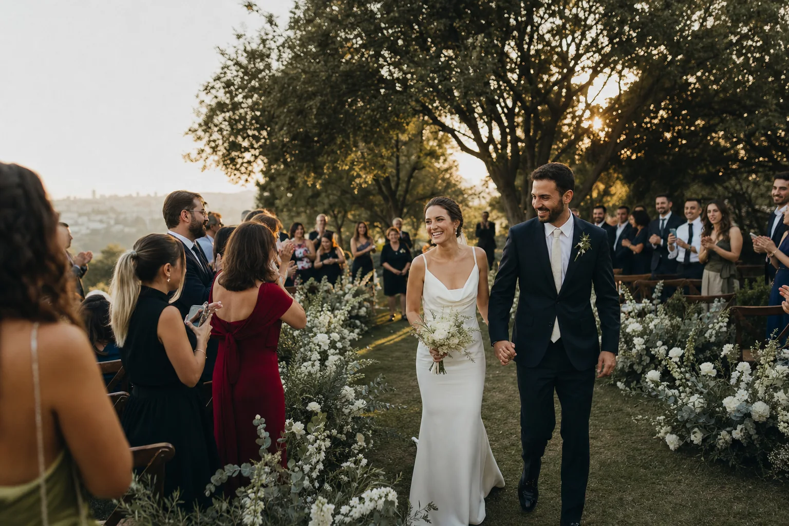
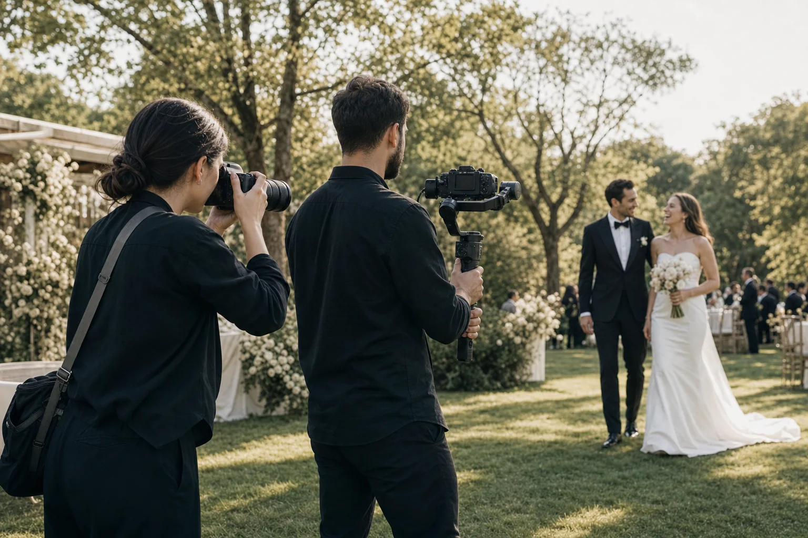

Gün başlamadan hemen önce.
Oda kalabalıklaşmadan kalan birkaç sessiz saniye.
İstanbul · Fotoğraf & Sinematik Film
Günün telaşını değil; size ait bakışları, sesleri ve küçük anları zamansız fotoğraflara ve sinematik bir filme dönüştürüyoruz.

Çekimden sonra 72 saatte ön izleme Seçili kareleriniz çevrimiçi galeride.
Gününüze sakin ve görünmezce eşlik eden ekip
Seçilmiş hikâyeler
Hazırlığın sessizliği, “evet”ten sonraki nefes ve gecenin içinde birbirini bulan iki el. Biz, yıllar sonra da hissedilecek olanı arıyoruz.
Oda kalabalıklaşmadan kalan birkaç sessiz saniye.
Alkışlardan bir an önce, her şey yalnız size ait.
Yönlendirilmiş bir poz değil, size açılan sakin bir alan.
Işıklar, müzik ve birbirini yeniden bulan iki el.
Tek ekip · Beş disiplin
Fotoğraf ve filmi ayrı işler gibi değil, aynı hikâyenin iki dili gibi planlıyoruz. Günün ritmini bölmeden, görünmezce eşlik ediyoruz.
Hazırlıktan dansa, doğal anları ve aile portrelerini dengeli bir akışta toplarız.
Sesleri, hareketi ve günün duygusunu kısa, zamansız bir filme dönüştürürüz.
Lokasyon, ışık ve ulaşımı günün programına göre tek bir çekim planında kurarız.
Mekânı ve kalabalığı anlatan havadan görüntüleri uygun koşullarda filme ekleriz.
En güçlü kareleri dokusu ve sıralaması özenle seçilmiş fiziksel bir hikâyeye taşırız.
Portre yaklaşımımız Mekân değişir, yaklaşım değişmez: önce rahat hissetmeniz için alan açarız.
Foto-sekans
Showreel yayına alınana kadar aynı günün dört karesinden oluşan bu sessiz sekans, anlatım yaklaşımımızı gösterir.

Çalışma biçimimiz Akışı bölmeden, anın içinde
Nasıl çalışıyoruz
Tek muhatapla ilerler; salonunuzun akışına, ışığa ve seçtiğiniz pakete uygun fotoğrafçı–kameraman ekibini eşleştiririz.
Tarihinizi, salonunuzu ve önceliklerinizi öğreniriz.
Çekim stilinize ve günün temposuna uygun ekibi belirleriz.
Işık, ulaşım ve salon programını tek akışta netleştiririz.
72 saatte ön izleme, ardından özenle tamamlanan final seçkisi.
Çekim paketleri
Her pakette KDV, İstanbul içi ulaşım, çevrimiçi galeri ve 72 saat içinde ön izleme dahildir.
01 Dış çekim
02 Fotoğraf + film En çok tercih edilen
03 Tam gün
Kesin teklif tarih, mekân ve çekim akışına göre hazırlanır.
Çiftlerin notları
Bu bölümdeki yorumlar yerleşim ve tasarım ön izlemesi içindir. Yayın öncesinde yalnızca doğrulanmış çift yorumları kullanılacaktır.
Gün boyu yanımızdalardı ama hiçbir anı bölmediler. Fotoğraflara baktığımızda yalnızca nasıl göründüğümüzü değil, nasıl hissettiğimizi hatırladık.
“Kamera karşısında rahat değildik; on dakika sonra çekimde olduğumuzu unuttuk.”
“Plan o kadar netti ki düğün günü bizim yapmamız gereken tek şey anın içinde kalmaktı.”
Merak edilenler
Başka bir sorunuz varsa WhatsApp üzerinden yazmanız yeterli. Size paket satmadan önce gününüzü anlamak isteriz.
Sorunuzu yazın ↗WhatsApp üzerinden düğün tarihinizi ve mekânınızı iletin. Ekip uygunluğu kontrol edilerek size dönüş yapılacaktır.
Hayır. Çekimden önce ışık, ulaşım ve salon akışı değerlendirilir; ekip günün programına göre hazırlık yapar.
Yaklaşımımız katı pozlardan çok küçük yönlendirmelere dayanır. Önceliğimiz rahat hissetmeniz ve günün gerçek ritmini korumaktır.
Evet. Ekipler aynı çekim planını paylaşır; böylece birbirlerinin kadrajını ve günün akışını bölmeden çalışırlar.
Seçili ön izleme kareleri 72 saat içinde, nihai fotoğraf ve filmler ise sözleşmede belirtilen takvimde çevrimiçi galeri üzerinden teslim edilir.
İlk adım · 2 dakikalık mesaj
Tarihinizi, mekânınızı ve aklınızdaki çekimi yazın. Size uygun paket ve ekip planını birlikte netleştirelim.
WhatsApp’tan tarih sor ↗ Tarih ve mekân bilgilerinizi paylaşın; size uygun ekibi birlikte netleştirelim.